Web Server Statistics for sfdumitru.org
Web Server Statistics for sfdumitru.org
Program started on Tue, Jun 30 2020 at 3:16 PM.
Analyzed requests from Fri, Mar 22 2019 at 8:15 PM to Tue, Jun 30 2020 at 1:54 PM (465.74 days).
Web Server Statistics for sfdumitru.orgProgram started on Tue, Jun 30 2020 at 3:16 PM.
Analyzed requests from Fri, Mar 22 2019 at 8:15 PM to Tue, Jun 30 2020 at 1:54 PM (465.74 days).
(Go To: Top | General Summary | Monthly Report | Daily Summary | Hourly Summary | Domain Report | Organization Report | Redirected Referrer Report | Failed Referrer Report | Referring Site Report | Browser Report | Browser Summary | Operating System Report | Status Code Report | File Size Report | File Type Report | Directory Report | Request Report)
Figures in parentheses refer to the 7-day period ending Jun 30 2020 at 3:16 PM.
Successful requests: 5,391 (65)
Average successful requests per day: 11 (9)
Successful requests for pages: 31 (0)
Failed requests: 3,689 (0)
Redirected requests: 23,216 (6)
Distinct files requested: 105 (1,604)
Distinct hosts served: 1,599 (6,314)
Data transferred: 5.07 megabytes (133.88 kilobytes)
Average data transferred per day: 11.14 kilobytes (19.13 kilobytes)
(Go To: Top | General Summary | Monthly Report | Daily Summary | Hourly Summary | Domain Report | Organization Report | Redirected Referrer Report | Failed Referrer Report | Referring Site Report | Browser Report | Browser Summary | Operating System Report | Status Code Report | File Size Report | File Type Report | Directory Report | Request Report)
Each unit ( ) represents 1 request for a page.
) represents 1 request for a page.
| month | #reqs | #pages | |
|---|---|---|---|
| Mar 2019 | 114 | 0 | |
| Apr 2019 | 528 | 3 |  |
| May 2019 | 480 | 2 | |
| Jun 2019 | 423 | 1 | |
| Jul 2019 | 440 | 5 |  |
| Aug 2019 | 358 | 3 | |
| Sep 2019 | 376 | 4 | |
| Oct 2019 | 307 | 2 | |
| Nov 2019 | 330 | 1 | |
| Dec 2019 | 385 | 1 | |
| Jan 2020 | 249 | 1 | |
| Feb 2020 | 248 | 1 | |
| Mar 2020 | 293 | 2 | |
| Apr 2020 | 240 | 1 | |
| May 2020 | 336 | 1 | |
| Jun 2020 | 284 | 3 | |
Busiest month: Jul 2019 (5 requests for pages).
(Go To: Top | General Summary | Monthly Report | Daily Summary | Hourly Summary | Domain Report | Organization Report | Redirected Referrer Report | Failed Referrer Report | Referring Site Report | Browser Report | Browser Summary | Operating System Report | Status Code Report | File Size Report | File Type Report | Directory Report | Request Report)
Each unit () represents 1 request for a page.
| day | #reqs | #pages | |
|---|---|---|---|
| Sun | 717 | 0 | |
| Mon | 723 | 4 | |
| Tue | 703 | 3 | |
| Wed | 839 | 1 | |
| Thu | 833 | 17 |  |
| Fri | 757 | 1 | |
| Sat | 819 | 5 | |
(Go To: Top | General Summary | Monthly Report | Daily Summary | Hourly Summary | Domain Report | Organization Report | Redirected Referrer Report | Failed Referrer Report | Referring Site Report | Browser Report | Browser Summary | Operating System Report | Status Code Report | File Size Report | File Type Report | Directory Report | Request Report)
Each unit () represents 1 request for a page.
| hour | #reqs | #pages | |
|---|---|---|---|
| 0 | 275 | 2 | |
| 1 | 213 | 9 |  |
| 2 | 191 | 2 | |
| 3 | 202 | 2 | |
| 4 | 231 | 0 | |
| 5 | 378 | 0 | |
| 6 | 215 | 1 | |
| 7 | 216 | 1 | |
| 8 | 243 | 4 | |
| 9 | 186 | 0 | |
| 10 | 223 | 1 | |
| 11 | 236 | 1 | |
| 12 | 267 | 2 | |
| 13 | 259 | 0 | |
| 14 | 216 | 0 | |
| 15 | 178 | 1 | |
| 16 | 185 | 1 | |
| 17 | 215 | 2 | |
| 18 | 178 | 0 | |
| 19 | 181 | 1 | |
| 20 | 188 | 1 | |
| 21 | 283 | 0 | |
| 22 | 206 | 0 | |
| 23 | 226 | 0 |
(Go To: Top | General Summary | Monthly Report | Daily Summary | Hourly Summary | Domain Report | Organization Report | Redirected Referrer Report | Failed Referrer Report | Referring Site Report | Browser Report | Browser Summary | Operating System Report | Status Code Report | File Size Report | File Type Report | Directory Report | Request Report)
Listing domains, sorted by the amount of traffic.
| #reqs | %bytes | domain |
|---|---|---|
| 5391 | 100% | [unresolved numerical addresses] |
(Go To: Top | General Summary | Monthly Report | Daily Summary | Hourly Summary | Domain Report | Organization Report | Redirected Referrer Report | Failed Referrer Report | Referring Site Report | Browser Report | Browser Summary | Operating System Report | Status Code Report | File Size Report | File Type Report | Directory Report | Request Report)
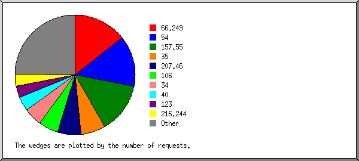
Listing the top 20 organizations by the number of requests, sorted by the number of requests.
| #reqs | %bytes | organization |
|---|---|---|
| 707 | 5.41% | 157.55 |
| 707 | 5.43% | 54 |
| 668 | 5.96% | 66.249 |
| 380 | 2.91% | 35 |
| 361 | 5.78% | 106 |
| 271 | 2.08% | 207.46 |
| 246 | 1.82% | 34 |
| 232 | 1.77% | 40 |
| 225 | 3.49% | 123 |
| 216 | 3.52% | 216.244 |
| 145 | 2.34% | 178.154 |
| 118 | 1.92% | 58 |
| 110 | 0.96% | 17 |
| 94 | 0.72% | 46 |
| 88 | 1.42% | 87 |
| 82 | 0.63% | 157.82 |
| 82 | 1.33% | 218.30 |
| 38 | 0.29% | 180.76 |
| 38 | 1.85% | 5 |
| 37 | 0.59% | 111 |
| 546 | 49.78% | [not listed: 101 organizations] |
(Go To: Top | General Summary | Monthly Report | Daily Summary | Hourly Summary | Domain Report | Organization Report | Redirected Referrer Report | Failed Referrer Report | Referring Site Report | Browser Report | Browser Summary | Operating System Report | Status Code Report | File Size Report | File Type Report | Directory Report | Request Report)
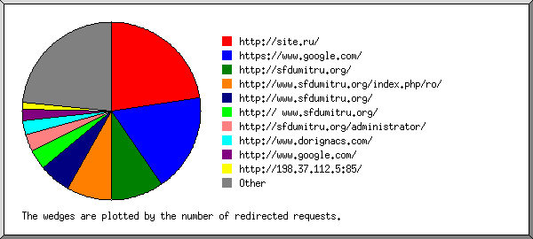
Listing the top 30 referring URLs by the number of redirected requests, sorted by the number of redirected requests.
(Go To: Top | General Summary | Monthly Report | Daily Summary | Hourly Summary | Domain Report | Organization Report | Redirected Referrer Report | Failed Referrer Report | Referring Site Report | Browser Report | Browser Summary | Operating System Report | Status Code Report | File Size Report | File Type Report | Directory Report | Request Report)
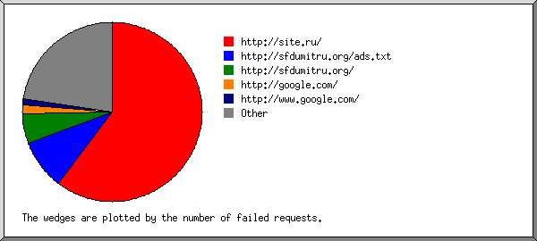
Listing the top 30 referring URLs by the number of failed requests, sorted by the number of failed requests.
(Go To: Top | General Summary | Monthly Report | Daily Summary | Hourly Summary | Domain Report | Organization Report | Redirected Referrer Report | Failed Referrer Report | Referring Site Report | Browser Report | Browser Summary | Operating System Report | Status Code Report | File Size Report | File Type Report | Directory Report | Request Report)
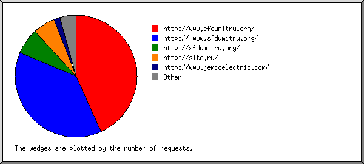
Listing referring sites, sorted by the number of requests.
| #reqs | site |
|---|---|
| 51 | http://www.sfdumitru.org/ |
| 36 | http:// www.sfdumitru.org/ |
| 8 | http://sfdumitru.org/ |
| 6 | http://site.ru/ |
| 1 | http://privhosting.com/ |
| 1 | http://www.google.com.hk/ |
| 1 | https://yandex.com/ |
| 1 | http://www.agrisecure.com/ |
(Go To: Top | General Summary | Monthly Report | Daily Summary | Hourly Summary | Domain Report | Organization Report | Redirected Referrer Report | Failed Referrer Report | Referring Site Report | Browser Report | Browser Summary | Operating System Report | Status Code Report | File Size Report | File Type Report | Directory Report | Request Report)

Listing browsers with at least 1 request for a page, sorted by the number of requests for pages.
| #reqs | #pages | browser |
|---|---|---|
| 15 | 15 | Mozilla/5.0 (compatible; Google-Site-Verification/1.0) |
| 852 | 3 | Sogou web spider/4.0(+http://www.sogou.com/docs/help/webmasters.htm#07) |
| 2 | 2 | Mozilla/5.0 (Windows NT 6.2; Win64; x64) AppleWebKit/537.36 (KHTML, like Gecko) Chrome/71.0.3578.98 Safari/537.36 |
| 248 | 2 | Mozilla/5.0 (compatible; YandexBot/3.0; +http://yandex.com/bots) |
| 1 | 1 | Mozilla/5.0 (Windows NT 6.1) AppleWebKit/537.36 (KHTML, like Gecko) Chrome/75.0.3770.142 Safari/537.36 |
| 15 | 1 | Mozilla/5.0 (Linux; Android 6.0.1; Nexus 5X Build/MMB29P) AppleWebKit/537.36 (KHTML, like Gecko) Chrome/41.0.2272.96 Mobile Safari/537.36 (compatible; Googlebot/2.1; +http://www.google.com/bot.html) |
| 605 | 1 | ZoominfoBot (zoominfobot at zoominfo dot com) |
| 868 | 1 | Mozilla/5.0 (compatible; bingbot/2.0; +http://www.bing.com/bingbot.htm) |
| 2 | 1 | Mozilla/5.0 (Windows NT 6.1; Win64; x64) AppleWebKit/537.36 (KHTML, like Gecko) Chrome/75.0.3770.142 Safari/537.36 |
| 1 | 1 | Mozilla/5.0 (Windows NT 10.0; Win64; x64) AppleWebKit/537.36 (KHTML, like Gecko) Chrome/72.0.3626.119 Safari/537.36 |
| 1 | 1 | Mozilla/5.0 (compatible; MSIE 9.0; Windows NT 5.1) |
| 1 | 1 | Mozilla/5.0 (Windows NT 10.0; WOW64; rv:42.0) Gecko/20100101 Firefox/42.0 |
| 1 | 1 | Mozilla/5.0 (Windows NT 10.0; Win64; x64) AppleWebKit/537.36 (KHTML, like Gecko) Chrome/80.0.3987.132 Safari/537.36 |
| 2770 | 0 | [not listed: 103 browsers] |
(Go To: Top | General Summary | Monthly Report | Daily Summary | Hourly Summary | Domain Report | Organization Report | Redirected Referrer Report | Failed Referrer Report | Referring Site Report | Browser Report | Browser Summary | Operating System Report | Status Code Report | File Size Report | File Type Report | Directory Report | Request Report)
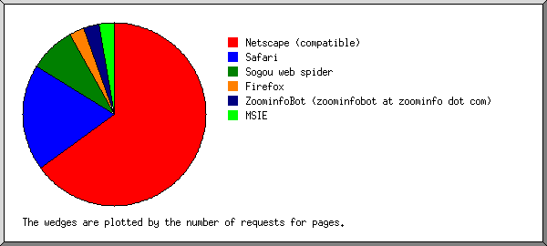
Listing browsers with at least 1 request for a page, sorted by the number of requests for pages.
| # | #reqs | #pages | browser |
|---|---|---|---|
| 1 | 2996 | 18 | Netscape (compatible) |
| 2 | 263 | 7 | Safari |
| 145 | 7 | Safari/537 | |
| 3 | 852 | 3 | Sogou web spider |
| 852 | 3 | Sogou web spider/4 | |
| 4 | 186 | 1 | Firefox |
| 1 | 1 | Firefox/42 | |
| 5 | 605 | 1 | ZoominfoBot (zoominfobot at zoominfo dot com) |
| 6 | 3 | 1 | MSIE |
| 1 | 1 | MSIE/9 | |
| 477 | 0 | [not listed: 25 browsers] |
(Go To: Top | General Summary | Monthly Report | Daily Summary | Hourly Summary | Domain Report | Organization Report | Redirected Referrer Report | Failed Referrer Report | Referring Site Report | Browser Report | Browser Summary | Operating System Report | Status Code Report | File Size Report | File Type Report | Directory Report | Request Report)
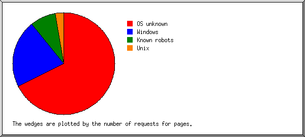
Listing operating systems, sorted by the number of requests for pages.
| # | #reqs | #pages | OS |
|---|---|---|---|
| 1 | 2927 | 19 | OS unknown |
| 2 | 206 | 8 | Windows |
| 22 | 4 | Unknown Windows | |
| 66 | 3 | Windows NT | |
| 118 | 1 | Windows XP | |
| 3 | 2022 | 3 | Known robots |
| 4 | 80 | 1 | Unix |
| 80 | 1 | Linux | |
| 5 | 147 | 0 | Macintosh |
(Go To: Top | General Summary | Monthly Report | Daily Summary | Hourly Summary | Domain Report | Organization Report | Redirected Referrer Report | Failed Referrer Report | Referring Site Report | Browser Report | Browser Summary | Operating System Report | Status Code Report | File Size Report | File Type Report | Directory Report | Request Report)
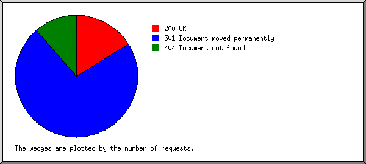
Listing status codes, sorted numerically.
| #reqs | status code |
|---|---|
| 5390 | 200 OK |
| 1 | 206 Partial content |
| 23216 | 301 Document moved permanently |
| 3683 | 404 Document not found |
| 4 | 406 Document not acceptable to client |
| 2 | 500 Internal server error |
(Go To: Top | General Summary | Monthly Report | Daily Summary | Hourly Summary | Domain Report | Organization Report | Redirected Referrer Report | Failed Referrer Report | Referring Site Report | Browser Report | Browser Summary | Operating System Report | Status Code Report | File Size Report | File Type Report | Directory Report | Request Report)
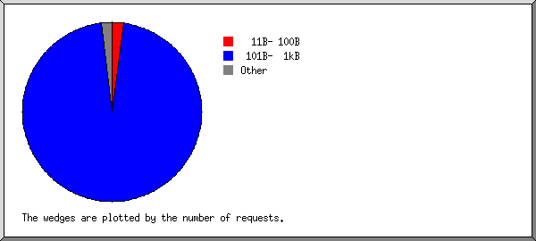
| size | #reqs | %bytes |
|---|---|---|
| 0 | 37 | |
| 1B- 10B | 0 | |
| 11B- 100B | 111 | 0.16% |
| 101B- 1kB | 5170 | 52.37% |
| 1kB- 10kB | 49 | 1.98% |
| 10kB-100kB | 13 | 7.52% |
| 100kB- 1MB | 11 | 37.98% |
(Go To: Top | General Summary | Monthly Report | Daily Summary | Hourly Summary | Domain Report | Organization Report | Redirected Referrer Report | Failed Referrer Report | Referring Site Report | Browser Report | Browser Summary | Operating System Report | Status Code Report | File Size Report | File Type Report | Directory Report | Request Report)
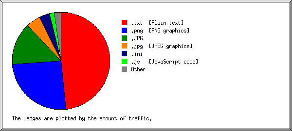
Listing extensions with at least 0.1% of the traffic, sorted by the amount of traffic.
| #reqs | %bytes | extension |
|---|---|---|
| 5137 | 51.98% | .txt [Plain text] |
| 5 | 23.62% | .png [PNG graphics] |
| 7 | 14.64% | .JPG |
| 6 | 4.58% | .ini |
| 28 | 2.04% | .js [JavaScript code] |
| 34 | 1.23% | .css [Cascading Style Sheets] |
| 3 | 0.69% | .jpg [JPEG graphics] |
| 1 | 0.48% | .woff |
| 12 | 0.26% | .ico |
| 8 | 0.18% | .xml |
| 4 | 0.15% | .cgi [CGI scripts] |
| 103 | 0.14% | [no extension] |
| 43 | 0.02% | [not listed: 4 extensions] |
(Go To: Top | General Summary | Monthly Report | Daily Summary | Hourly Summary | Domain Report | Organization Report | Redirected Referrer Report | Failed Referrer Report | Referring Site Report | Browser Report | Browser Summary | Operating System Report | Status Code Report | File Size Report | File Type Report | Directory Report | Request Report)
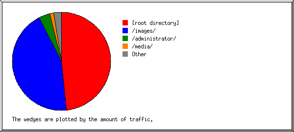
Listing directories with at least 0.01% of the traffic, sorted by the amount of traffic.
| #reqs | %bytes | directory |
|---|---|---|
| 5166 | 52.00% | [root directory] |
| 16 | 38.66% | /images/ |
| 10 | 4.72% | /administrator/ |
| 19 | 1.81% | /media/ |
| 44 | 1.18% | /plugins/ |
| 5 | 1.05% | /language/ |
| 18 | 0.28% | /templates/ |
| 4 | 0.15% | /cgi-sys/ |
| 93 | 0.14% | /.well-known/ |
| 16 | [not listed: 2 directories] |
(Go To: Top | General Summary | Monthly Report | Daily Summary | Hourly Summary | Domain Report | Organization Report | Redirected Referrer Report | Failed Referrer Report | Referring Site Report | Browser Report | Browser Summary | Operating System Report | Status Code Report | File Size Report | File Type Report | Directory Report | Request Report)
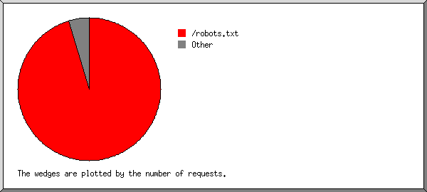
Listing files with at least 20 requests, sorted by the number of requests.
| #reqs | %bytes | last time | file |
|---|---|---|---|
| 5134 | 51.90% | Jun/30/20 1:43 PM | /robots.txt |
| 35 | 0.32% | Apr/27/20 3:19 PM | /robots.txt?23.27.239.84 |
| 12 | 0.09% | May/10/20 3:07 PM | /robots.txt?66.108.61.237 |
| 12 | 0.18% | Apr/27/19 3:17 PM | /robots.txt?54.36.148.168 |
| 21 | 0.37% | Feb/27/20 6:46 PM | /plugins/system/videobox/css/videobox.css |
| 21 | 0.79% | Apr/ 7/20 2:02 PM | /plugins/system/videobox/videobox.js |
| 215 | 46.94% | Jun/28/20 6:40 PM | [not listed: 91 files] |